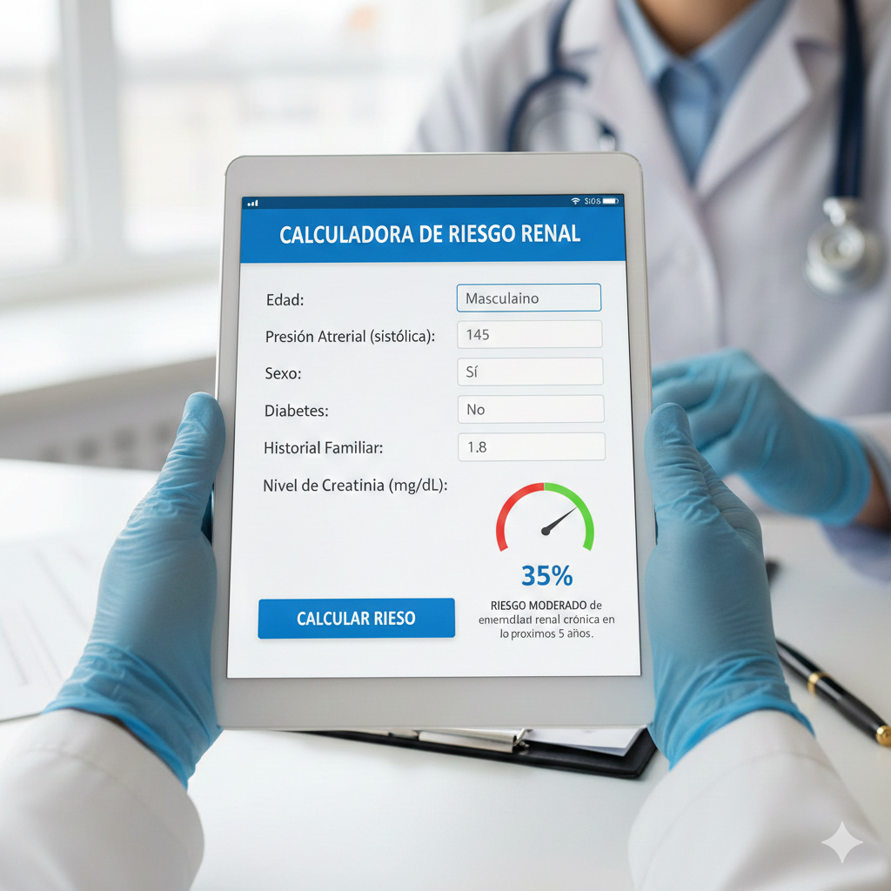

 Renálida incorpora nueva herramienta para cálculo de riesgo renal Se actualizó el módulo de calculadora renal con los últimos criterios CKD-EPI y recomendaciones KDIGO... Publicado el 20/11/2025
Campaña de detección temprana de enfermedad renal crónica Renálida se suma a la campaña nacional de concientización, promoviendo estudios de creatinina y uRAC... Publicado el 10/11/2025
Nuevas guías clínicas para seguimiento de pacientes en riesgo Se publicaron recomendaciones actualizadas para el seguimiento ambulatorio de pacientes con riesgo moderado... Publicado el 05/11/2025